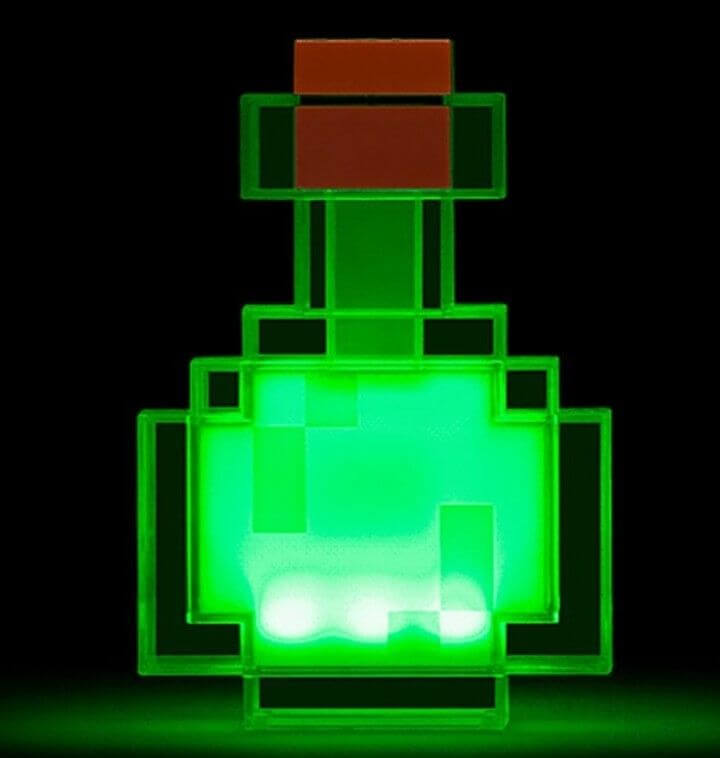

¡Guia para Pociones!
Publicado el 7 de Septiembre, 2026 por Danivaas

Guía Definitiva de Pociones: Caída Lenta
Publicado el 6 de Septiembre, 2026 por Admin
¿Cansado de perder todos tus diamantes por caer accidentalmente en una grieta gigante? ¿El Dragón del End te lanzó por los aires y no tenías un cubo de agua a mano? No te preocupes más, hoy te enseñaremos a preparar la salvadora Poción de Caída Lenta.
Ingredientes Necesarios
Antes de empezar a mezclar, asegúrate de tener tu Soporte para Pociones listo y los siguientes ingredientes (¡recuerda que puedes comprar la mayoría de ellos en nuestro catálogo de MineShop si te da pereza ir a buscarlos!):
- Polvo de Blaze: Servirá como el combustible para tu soporte.
- Botellas de Agua: La base de cualquier poción.
- Verruga del Nether: Para convertir el agua en una "Poción Rara".
- Membrana de Fantasma: El ingrediente mágico principal. Se consigue cazando a los Phantoms que aparecen cuando no duermes por varios días.
La Receta Paso a Paso
Hacer esta poción es muy sencillo si sigues estos pasos al pie de la letra:
- Abre tu Soporte para Pociones y coloca el Polvo de Blaze en la casilla superior izquierda para encenderlo.
- Coloca hasta 3 botellas de agua en los espacios inferiores.
- Pon la Verruga del Nether en la casilla superior y espera a que se procese. ¡Ahora tienes Pociones Raras!
- Sin quitar las botellas, coloca la Membrana de Fantasma en la casilla superior.
¡Y listo! Una vez que termine el proceso, tendrás Pociones de Caída Lenta que duran 1 minuto y 30 segundos. Al beberla, caerás suavemente como una pluma y no recibirás nada de daño al tocar el suelo.
Tip de Experto 💡
Si quieres que el efecto dure más tiempo, añade un polvo de Redstone a las pociones terminadas. Esto extenderá la duración del efecto a 4 minutos completos. ¿No quieres arriesgar tu vida cazando Phantoms en la noche? ¡Visita la sección de consumibles de MineShop y compra tus pociones ya fabricadas!